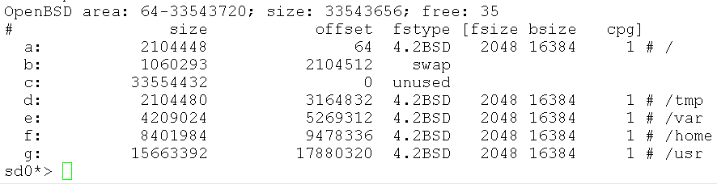

penulis : Badli Al Rashid
e-mel : badli.a.r@gmail.com
tarikh : 22 Februari 2022
lesen : Creative Commons
Permulaan
Saya bukannya pakar pengguna OpenBSD atau
"unix guru". Saya pengguna biasa sahaja.
Saya akan menaruh nota nota saya ini ke dalam Github dan saya berharap ia
bermanfaat untuk anda.
Gambar 01 - Maskot OpenBSD, Puffy versi MangaRamblo
Saya mulanya tertarik kepada watak puffy versi "MangaRamblo" kerana ia berbeza dengan watak
BSD Daemon. Ia Seolah olah dilukis oleh pelukis X-Men
sembilan puluhan, Joe Madureira. Lukisan dia di pengaruhi pelukis Manga Jepun yang membuatnya unik. Watak tersebut
juga digunakan oleh halaman OpenBSD Journal.
Perisai percuma OpenBSD yang diusahakan secara terbuka oleh sukarelawan dari seluruh dunia.
Bermula pada tahun 1996 oleh pengasasnya, Theo De Raadt.
Pada masa itu dia telah disingkirkan oleh kumpulan NetBSD yang mengusahakan perisai
terbuka NetBSD. 1* 2** . Walaupun begitu, kedua dua kumpulan ini masih
berkolobirasi sama.
Populariti OpenBSD tidaklah banyak berbanding perisai lain seperti FreeBSD,
Apple macOS dan juga
Microsoft Windows. Namun kebanyakan perisai Unix atau semacam Unix menggunakan aplikasi popular mereka OpenSSH.
Gambar 02 - StarryPointers, semacam lukisan Vincent Van Goh
Semasa menulis dokumen ini, perisai OpenBSD di tahap versi 7.0
Perbezaan Di Antara OpenBSD Dan Debian
Pengguna OpenBSD berasal dari perisai yang lain. Saya menggunakan Microsoft Windows dan GNU/Linux.
Saya memberi contoh Debian kerana ia ada lah sebuah pengedar Linux amat popular
yang di urus oleh suka relawan. Kedua kedua perisian ini tidaklah begitu berbeza dari segi usia dan 'Look and feel' mereka.
Saya menggunakan Debian 11 dalam perbezaan ini
Deskripsi
OpenBSD
Debian
Keluarga Unix
* BSD
** GNU/Linux
*** Lessen
BSD
GPL
Pengeluaran Perisai
Satu Kumpulan
**** Integrasi
Pemasangan
text
text dan graphical
Lokasi Kernel
/
/boot
Default Shell
ksh
bash
Mengurus Applikasi
pkg_add
apt
Format Applikasi Pakage
.tgz
.deb
Perbezaan di antara OpenBSD dan Debian ini adalah dari sumber kod, lessen dan budaya "Open Source" mereka.
* BSD (Berkley Software Distribution)
OpenBSD tergolong dari keluarga BSD Unix, Sumber kod bercabang dari NetBSD, Kod NetBSD bercabang dari 386BSD.
Dan 386BSD bercabang dari kod 4.3 BSD Net/2 iaitu BSD (Berkley Software Distribution) yang di uruskan oleh Computer
System Research Group (CSRG), di University of California, Berkeley.
Kod kod CSRG ini berasal dari perisian 'at&t' (American Telephone and Telegraph) Unix. Sumber kod tersebut di beri
oleh pihak at&t untuk pihak Universiti. Di sini kod kod tersebut telah terdedah kepada guru dan pelajar pada
era tujuh puluhan.
Pada mulanya mereka hanya membuat aplikasi. Tetapi Setelah selesa dengan kod dalaman mereka telah mengubah suai
(Hacking the code) bahagian dalaman kod Unix tersebut dan mengedar jenama Unix mereka melauie tape. Di sinilah mulanya
cabang atau Forking kod kod Unix tersebut dan permulaan "Open Source" di antara komuniti pengguna komputer.
Tetapi pada tahun 1992 pihak UNIX System Laboratories (pemiliknya at&t dan selepas itu Novell) telah menyaman pihak
Berkley Software Design Inc (BSDi) dan Regents of the University of Carlifornia atas sebab menyalahgunakan milik hak cipta.
Keputusan dari perbicaraan itu dibuat di luar mahkamah. Salah satu keputusan tersebut adalah mengeluarkan kod at&t yang
dimaksudkan dari kod BSD. Kod yang dimaksudkan itu bukannya banyak tetapi ia adalah kod penting seperti kod boot dan seumpamanya.
Ini telah membuat perkembangan BSD setapak ke belakang. Namun sukarelawan BSD telah berjaya menghasilkan kod baru
untuk mengganti kod tersebut. Kod terakhir BSD adalah versi 4.4BSD-Lite Release 2 pada tahun 1995 dan keluarga BSD telah
mengassaskan kod tersebut.
Kod OpenBSD adalah cukup matang dan inovasinya menjadikan ia unik di kalang keluarga BSD Unix yang lain
kerana tertumpu kepada sekuriti.
** Debian GNU/Linux
Debian GNU/Linux tergolong dari keluarga semacam Unix.GNU atau "GNU Not Unix"
dan Kernel Linux..
Populariti GNU tertumpu kepada aplikasi yang mereka ada. Pengasas utama GNU ialah Richard Stallman. Pada era sembilan
puluhan GNU tidak ada perisiain untuk di edar dengan aplikasi popular mereka. Komponen penting itu adalah Kernel.
Kernel adalah kod yang mengatur dan mengurus sistem komputer.
Pada masa itu juga, Linus Trovalds penuntut di Universiti of Helsinki, Finland telah mempelawa salah
sebuah ruangan "Newsgroup" untuk maklum balas. Newsgroup semacam tapi bukan "Facebook" ala sembilan puluhan.
Dari email tersebut tercetusnya revolusi digital yang mengubah aluan "Open Source".
Gambar 03 - trovalds email
Debian adalah nama singkatan sempena nama "Debra Lyn" dan "Ian Murdock" pengasassnya. Pada masa itu mereka ada lah berpasangan.
Projek Debian telah menyumbang kepada kemajuan dan perkembangan Linux. Ia setanding dengan Linux komercial yang lainnya
seperti Redhat, Suse dan lain lain.
*** Lessen
GPL (GNU General Public license)
Lessen GPL atau "GNU General Public license" adalah salah satu Lessen Open Source. Secara amnya
Lessen GPL menyatakan bahawa aplikasi kod mestilah dapat di akses oleh sesiapa sahaja. Jikalau sumber kod
berubah atau terdapat modifikasi, sumber kod yang di ubah suai mestilah dapat di akses oleh sesiapa sahaja.
Ini termasuk Linux Kommercial yang berada di dalam pasaran.
Gambar 04 - Aplikasi GNU sed menggunakan GPL
BSD license
Berlainan dengan aplikasi aplikasi yang menggunakan lessen BSD atau "Berkley Software Distribution License".
Anda boleh mengedar aplikasi yang sudah dimodifikasi kodnya tanpa memberi sumber kod itu kepada sesiapapun
walaupun penulis asal sumber kod tersebut. Tetapi maklumat hakcipta aplikasi tersebut mestilah dipaparkan.
Ada perkhidmatan komercial mahupun bukan komercial suka lessen BSD ini.
Gambar 05 - Ini adalah aplikasi sed OpenBSD yang menggunakan BSD license
Oleh kerana lesen lesen GPL and BSD ini berbeza dan ia tidak serasi. Sebagai contoh Keluarga Unix BSD
menggunakan komponen asas mereka sendiri tidak seperti Debian GNU/Linux
**** Integrasi
Pengurusan Userland tools dibuat oleh sukarelawan GNU dan Linux Kernel di uruskan oleh sukarelawan Linux.
Sukarelawan Debian akan menguruskan integrasi aplikasi dan menyumbang kepada pembaik pulih aplikasi kepada
pengurusnya yang asal.
Pemasangan OpenBSD
Sebelum anda memasang OpenBSD ke dalam Laptop, Desktop atau Server anda. Sebaiknya kita selidiki jikalau perkakas
anda serasi dengan OpenBSD. Maksud perkakas di sini ialah:-
Storage controller
Network Adapter
Wireless Adapter
Graphics Card
Audio Card
dan perkakas multimedia yang lain.
Berbanding perkembangan Linux drivers, OpenBSD berada setapak di belakang. Kegunaan utama Perisai OpenBSD
adalah digunakan untuk Server, Router dan Firewall tetapi ada juga yang memasang untuk digunakan harian
ke dalam Laptop dan Desktop mereka.
Sekiranya anda belum selesa dengan pemasang OpenBSD ke dalam Laptop, Desktop atau Server anda boleh memasang
perisai tersebut secara virtual. Contoh aplikasi virtualization yang ada adalah seperti berikut:-
Installation media boleh didapati dihalaman utama OpenBSD. Media yang boleh
digunakan seperti USB Pendrive, Cakera Padat dan Floppy.
Ada berapa versi media pemasangan yang tersedia mengikut jenis Processor. Saya cuma memilih tiga sahaja:-
i386 - Processor 32bit untuk Intel 386 arkitektur atau pun kompatibel.
amd64- Processor 64 bit Dari AMD atau yang kompatibel.
macppc - Processor Power PC telah digunakan oleh Apple sebelum mereka bertukar ke Intel Processor dahulu
Processor 64bit dan 32bit
Sekiranya anda memasang drivers perkakas untuk sistem 32bit, drivers itu tidak akan berfungsi ke sistem 64bit dan
Begitu juga sebaliknya.
Aplikasi OpenBSD 32bit tidak boleh dipakai host OpenBSD 64bit dan aplikasi OpenBSD 64bit tidak boleh dipakai
host OpenBSD 32bit.
Sebelum memasang perisai ada beberapa maklumat anda perlu ada terlebih dahulu seperti:-
hostname ia itu nama komputer anda
IP address
IP address DNS
Dokumentasi untuk menyimpan file-file pemasangan OpenBSD di dalam media yang anda pilih ada di dalam halaman utama.
Masukkan media tersebut and mulakan pengembaraan awda ke dalam alam OpenBSD.
1 - Boot Dari Pemasangan Media
Gambar 06 - Boot dari Cakera Padat
Gambar 6 di atas menunjukan OpenBSD menunggu hendak membuat boot dar Cakera Padat. Tekan "Enter" untuk meneruskan.
2 - Skrip pemasangan OpenBSD
Gambar 07 - 'i' untuk Install
Semasa process Boot, ia akan menunjukkan perkakas yang ada terpasang di dalam sistem anda. Setelah selesai ia
menunjukkan beberapa pilihan. Tekan huruf "i" and tekan "enter" untuk memulakan pemasang OpenBSD
3 - Akses Sistem dan Akaun root
Gambar 08 - Akses dan Root
Anda boleh mengakses sistem anda dari sistem yang lain dengan mengaktifkan SSH daemon dalam process boot.
Sekiranya jika anda tidak mahu SSH daemon berfungsi anda boleh menjawab tidak. Awda hanya akses ke sistem secara fisi-kal
4 - Pembahagian Struktur Cakera Keras

Gambar 09 -Struktur Cakera Keras
Struktur Cakera Keras yang saya pilih adalah yang disediakan oleh skrip pemasangan. Anda boleh mengubah struktur mengikut
ke hendak awda atau mengubahnya selepas selesai pemasangan.
Dulu semasa saya belajar mengenai Debian ada orang menyebut tentang /exports, saya bengang apa yang dimaksudkan dengan
folder exports ? Saya mendapat tahu, dia menggunakan untuk mount point NFS server mereka. Struktur folder mereka berbeza
dengan yang saya biasa
5 - Komponen OpenBSD
Gambar 10 - Komponen OpenBSD
Di sini kita memilih semua komponen OpenBSD yang ada
bsd - komponen kernel *perlu
bsd.mp - komponen kernel untuk muti prosessor
bsd.rd - komponen kernel ramdisk
base70.tgz - komponen utama
etc.tgz - konfiguration sistem utama
comp70.tgz - sistem kompiler, file library dan sebagainya
game70.tgz - game teks
xetc70.tgz - kofiguration x11
xserv.tgz - komponen X11
xbase70.tgz - komponen utama X11
xshare70.tgz - file ini perlu untuk xbase
xfont70.tgz - font X11
6 - Waktu tempatan
Gambar 11 - Waktu tempatan
Di sini sama memilih "Asia/Brunei" sebagai waktu tempatan dan tekan enter untuk sistem reboot.
7 - Pertama kali Log Masuk ke OpenBSD
Gambar 12 - Pertama kali Log Masuk
System anda sudah boot ke dalam perisai OpenBSD dan jika anda terlihat ada url tertera http://firmware.openbsd.org,
OpenBSD sedang memasang drivers proprietary untuk perkakas anda, dari gambar di atas menunjukkan OpenBSD memasang drivers
untuk perkakas Intel. Kalau tidak ada access internet anda boleh menggunakan fw_update untuk memasang drivers tersebut
apabila mendapat access internet.
Saya log masuk dengan pengguna root sistem mengeluar kan mesej penyata
8 - Log masuk dari luar
OpenBSD dapat di akses dari luar. Maksud di sini kita log masuk ke sistem tidak berada di tempat sistem itu. kita
memerlukan alamat IP atau alamat penuh URL ( seperti computer1.webluar.net) . Selain itu menggunakan aplikasi
utility seperti:-
PuTTY - Aplikasi mudah terminal untuk
perisai * Microsoft Windows menggunakan protokol SSH.
WinSCP - Aplikasi untuk memudahkan memindah file menggunakan SSH untuk perisian
* Microsoft Windows menggunakan protokol SFTP, SCP.
ssh - Aplikasi terminal tersedia di dalam perisai Linux dan Windows
scp - Aplikasi memindah file tersedia di dalam perisai Linux dan Windows menggunakan protokol SSH
Gambar 13 - Menggunakan PuTTY untuk log masuk ke OpenBSD
SSHD atau SSH Daemon ada lah service yang membolehkan kita log masuk dari luar.
Log masuk ke OpenBSD
OpenBSD 7.0 (GENERIC) #5: Mon Jan 31 09:03:23 MST 2022
Welcome to OpenBSD: The proactively secure Unix-like operating system.
Please use the sendbug(1) utility to report bugs in the system.
Before reporting a bug, please try to reproduce it with the latest
version of the code. With bug reports, please try to ensure that
enough information to reproduce the problem is enclosed, and if a
known fix for it exists, include that as well.
cheesysalmon$
Selamat datang ke OpenBSD, Nama "cheesysalmon" adalah nama sistem dan $ adalah shell prompt.
cheesysalmon sedang menunggu arahan dari awak untuk di jalan kan di dalam sistem.
Shell
Secara ringkas, Shell adalah tempat anda berinteraksi dengan sistem OpenBSD dan seumpamanya. Shell yang disediakan
telah disediakan adalah Korn Shell atau nama singkatannya adalah 'ksh'. kalau di dalam perisaian Windows adalah
'Command prompt' atau 'PowerShell'. Di Shell ini kita
Kita mulakan dengan menaip 'pwd' (singkatan Print Working Directory)dan tekan 'Enter' untuk memastikan kita berada
di dalam home folder. Ia akan menunjukkan '/home/badli'.
Satu lagi cari untuk memastikan di mana home folder kita ialah dengan menaip 'echo $HOME'. $HOME ada lah home
environment variable. Setiap pengguna sistem ini mempunyaie berlainan home direktori.
file dan direktori yang disembunyikan
cheesysalmon$ ls
cheesysalmon$ ls -a
. .. .Xdefaults .cshrc .cvsrc .login .mailrc .profile .ssh
cheesysalmon$
Taip 'ls' (singkatan list) untuk melihat kandungan home direktori. Anda tidak nampak apa pun sama ada
file atau direktori di home directori kamu.
Sekarang taip 'ls -a' kita akan mendapati ada file dan direktori yang di sembunyikan sebelumnya. '-a' di sini
bermaksud untuk melihat semua file dan direktori walaupun ia di sembunyikan.
File dan direktori di sembunyikan tersebut adalah:-
.Xdefaults
.cshrc
.cvsrc
.login
.mailrc
.profile
.ssh
file atau direktori, butiran
cheesysalmon$ ls -al
total 36
drwxr-xr-x 3 badli badli 512 Feb 23 09:22 .
drwxr-xr-x 3 root wheel 512 Feb 23 03:46 ..
-rw-r--r-- 1 badli badli 87 Oct 1 04:00 .Xdefaults
-rw-r--r-- 1 badli badli 769 Oct 1 04:00 .cshrc
-rw-r--r-- 1 badli badli 101 Oct 1 04:00 .cvsrc
-rw-r--r-- 1 badli badli 359 Oct 1 04:00 .login
-rw-r--r-- 1 badli badli 175 Oct 1 04:00 .mailrc
-rw-r--r-- 1 badli badli 212 Oct 1 04:00 .profile
drwx------ 2 badli badli 512 Feb 23 03:44 .ssh
Kita boleh tahu yang mana satu file dan directory dengan menaip 'ls -al'. '-l' untuk menunjukkan butiran tersebut
-rw-r--r-- 1 badli badli 212 Oct 1 04:00 .profile
.profile adalah file kerana di arah permission (-rw-r--r--) tidak ada terdapat huruf 'd' yang menunjukkan direktori
Satu lagi kaedah untuk membeza di antara file dan directori adalah dengan menggunakan "file". Dari contoh program telah membezakan
.profile adalah text file dan .ssh adalah folder.
cheesysalmon$ file /sys
/sys: broken symbolic link to 'usr/src/sys'
cheesysalmon$ file /dev/sd0a
/dev/sd1: block special (4/0)
cheesysalmon$ file /bin/ls
/bin/ls: ELF 64-bit LSB shared object, x86-64, version 1
Program file juga dapat memberi tahu berapa jenis file.
/sys - adalah symbolic link, sama seperti shortcut di dalam Windows
/dev/sd0a - Ini ada block device untuk cakera keras anda
Semua Bermula Dengan /
Di dalam Sistem Unix atau Semacam Unix permulaan bermula dengan / atau "slash root", di sini semua direktori utama
akan dapat dilihat.
Direktori
Deskripsi
/
Tempat permulaan
/etc
Sistem Konfigurasi
/home
Tempat direktori pengguna,
Direktori ini selalu berasing partition
/root
Home direktori akaun pentadbir root,
Direktori ini selalu bersama dengan partition /
/sbin
Direktori ini selalu bersama dengan partition /
/bin
Direktori ini selalu bersama dengan partition /
/usr
usr folder
/usr/src
Sumber file dan folder asas perisai OpenBSD
/usr/ports
Direktori koleksi ports, ini adalah aplikasi extra. Bukan dari komponen asas OpenBSD.


{kind=link}